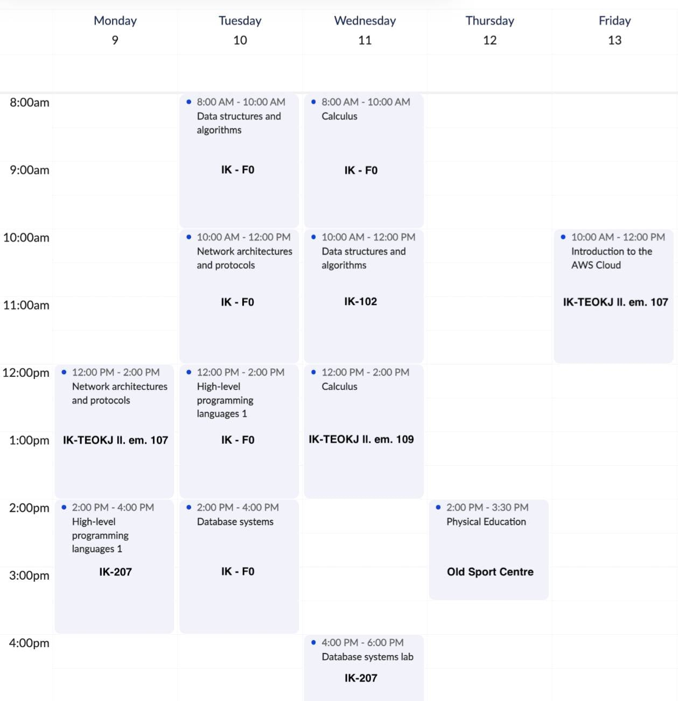
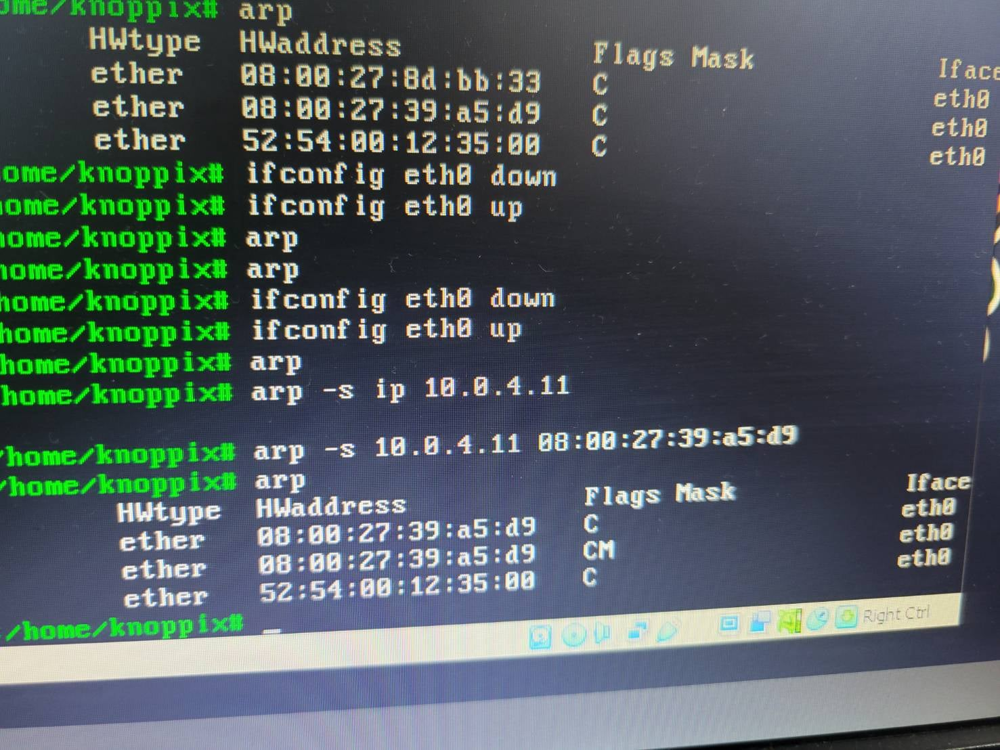
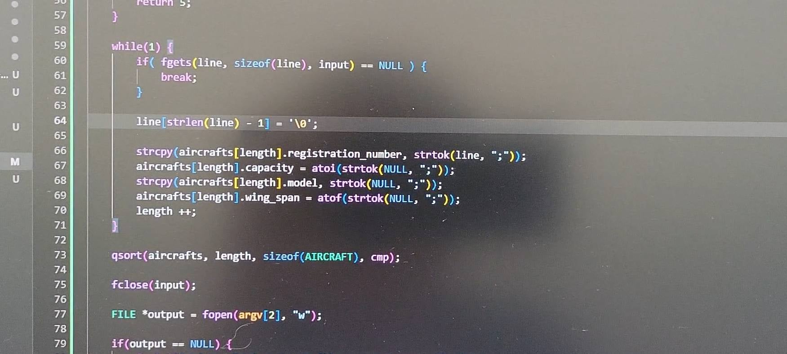
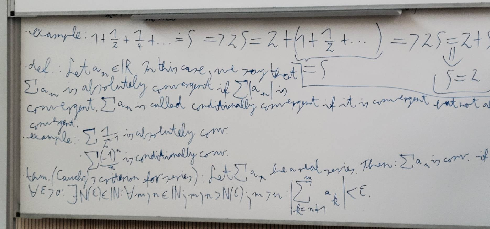
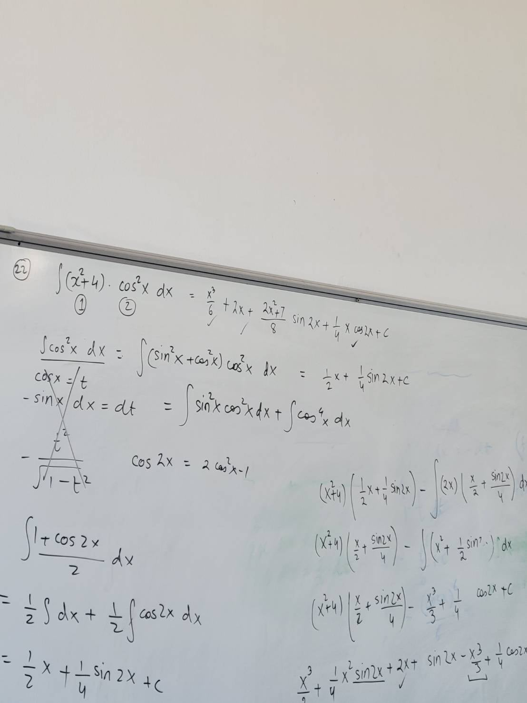
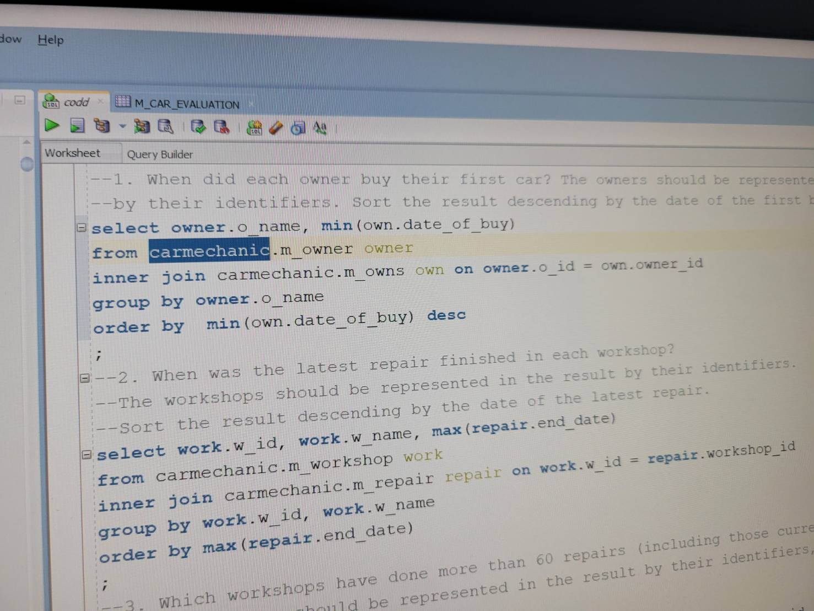
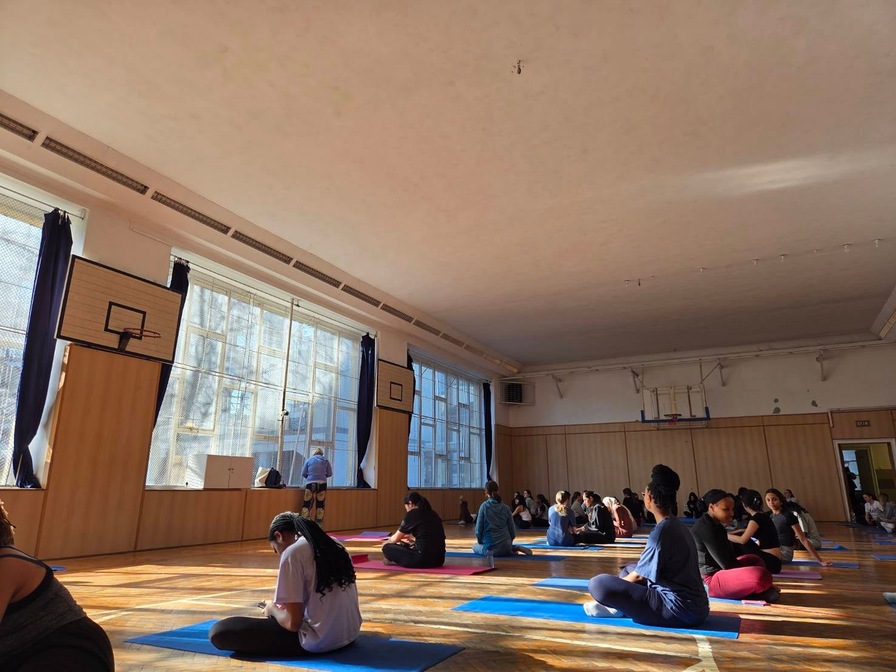

デブレツェン大生の日常（1年後期編）
みなさんこんにちは。
ハンガリー留学ラボのユウゴです。
今回は、「デブレツェン大生の日常（1年後期編）」について書いてみます。
あくまで私自身の1週間ですが、デブレツェン大学でComputer Scienceを学ぶ学生が、普段どのように授業を受け、空き時間や週末を過ごしているのか、参考になればうれしいです。
ほかの現役生の日常も気になる方は、ぜひ現役生面談も利用してみてください。
1年後期の時間割

月曜日｜午後から2コマ
月曜日は2コマあり、授業は午後からでした。朝はゆっくりできましたが、日曜日に夜更かしすることが多く、家を出る時間はいつもギリギリでした。
1コマ目：ネットワーク
パソコン上で複数の仮想環境を起動し、それぞれの環境間でデータをやり取りできるように設定する実習などを行いました。
最初は英語を聞き取るだけでも精一杯でしたが、後半になると少しずつ慣れ、作業のコツもつかめるようになりました。教授が前方の画面に操作手順を映してくれるため、完全に置いていかれることはありませんでした。

2コマ目：プログラミング
今期はC言語を学びました。最初は基礎的な内容が中心で、Pythonを学んだ経験があれば理解しやすいと思います。後半は少し難しくなりましたが、復習すれば対応できる程度でした。

火曜日｜朝から夕方まで4コマ
火曜日と水曜日に授業が集中しており、この2日間は基本的に朝から夕方まで大学で過ごしていました。
1コマ目：データストラクチャー
データの保存方法や扱い方を学ぶ大人数講義です。1限で出席確認もなかったため、参加者は比較的少なめでした。
2コマ目：ネットワーク
月曜日の実習と同じ科目ですが、火曜日は理論中心でした。抽象的な内容が多く、正直なところ理解できたのは半分程度だったと思います。
3コマ目：プログラミング
「変数とは何か」「変数の種類」「宣言とは何か」といった本質的な内容を扱いました。理論的な話が多く、理解度は6割程度でした。
4コマ目：データベース
SQLやデータベース上のテーブル同士の関係などを学びました。翌日の少人数授業とつながっていたため、比較的理解しやすかったです。
大学での昼食
大学でホットドッグを買ったり、大学へ行く前にスーパーでパンを多めに買ったりしていました。3コマ目の後には、大学でシェイクを買って飲むことも多かったです。
水曜日｜この日も1日4コマ
水曜日も火曜日と同じく4コマあり、ほぼ1日中大学にいました。ここを乗り越えると木曜日と金曜日はかなり楽になるため、「ここを頑張ればいい」と思って過ごしていました。
1コマ目：微積分の大人数講義
少人数授業で扱う内容を広く浅く学びました。スライドは使わず、教授の板書だけで進みましたが、その板書がかなり読みにくく、内容を追うのに苦労しました。

2コマ目：データストラクチャーの少人数授業
火曜日に学んだ内容を、問題を解きながら詳しく学びます。教授の英語は聞き取りやすく、質問にも丁寧に対応してくれました。
3コマ目：微積分の少人数授業
問題演習をしながら学びます。扱う問題は高校数学に近いレベルのものも多く、そこまで苦戦せず楽しみながら取り組めました。

4コマ目：データベースの少人数授業
SQLを書いて実際にデータを扱いました。授業は受けやすかったものの、感覚をつかめず、テストでは7割程度の得点でした。

木曜日｜ヨガの授業が1コマ
木曜日は14時から体育が1コマだけでした。デブレツェン大学では、卒業までに最低2学期は体育を履修する必要があります。
今期はヨガを選びました。授業の難易度が上がり、余裕がない時期でも、体を動かすことが良い気分転換になりました。ほかの学部の学生と交流できる点も良かったです。

金曜日｜AWSの授業が1コマ
金曜日は10時から1コマだけでした。AWSクラウドプラクティショナー資格の内容を中心に、資料を見ながら先生の説明を聞き、ときどき実装も行いました。
午後はアニメやドラマを見たり、友達とゲームをしたりしていました。「勉強は明日から」と考えていましたが、試験期間が近づいてからかなり後悔しました。
土曜日・日曜日｜自由時間の使い方が課題
土日は復習や課題を進めるうえで重要でしたが、私はNetflixを見て過ごすことが多かったです。昼に友達とカフェへ行き、午後に少しだけ復習し、日本の友人と夜までゲームをすることもありました。
海外にいても、意識的に行動しなければ、日本にいるときとあまり変わらない生活になってしまいます。
まとめ
今回は、デブレツェン大学Computer Science学科1年後期の1週間を紹介しました。
留学前は、毎日予習や復習、課題に追われる生活を想像するかもしれません。しかし、実際は日本の大学と同じように、試験前にまとめて勉強してしまうこともあります。
逆に言えば、留学中でも比較的自由に使える時間があります。旅行へ行ったり、友達と遊んだり、日本にいたらできない経験をすることも十分に可能です。
勉強の心配だけをしすぎず、留学中にやってみたいこともたくさん考えて来てください。
授業や時間割、実際の学生生活についてもっと詳しく聞きたい方は、ぜひ現役生面談を利用してみてください。